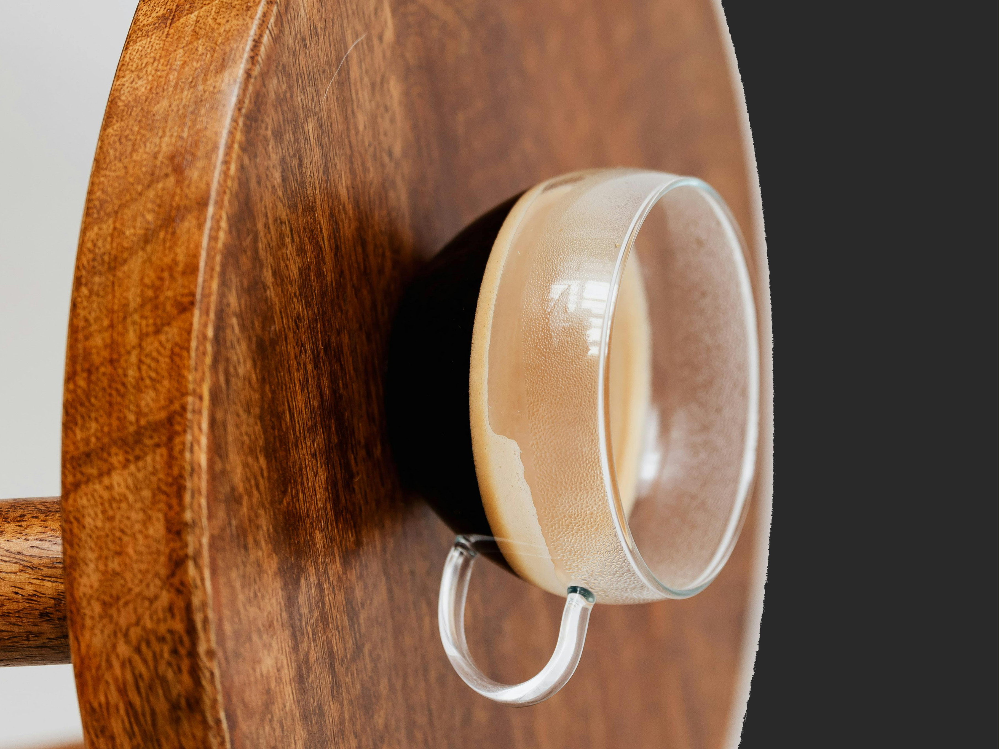
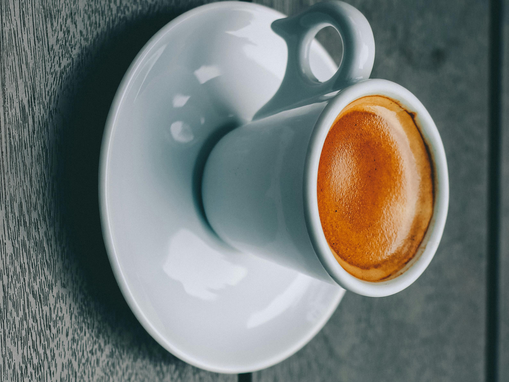
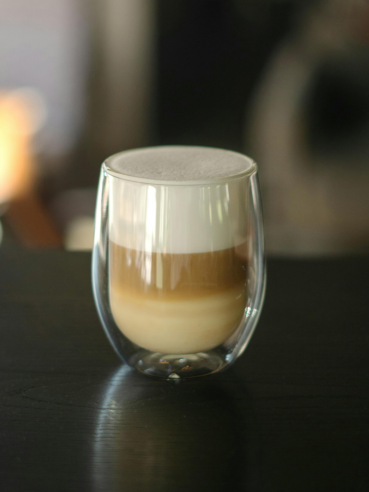
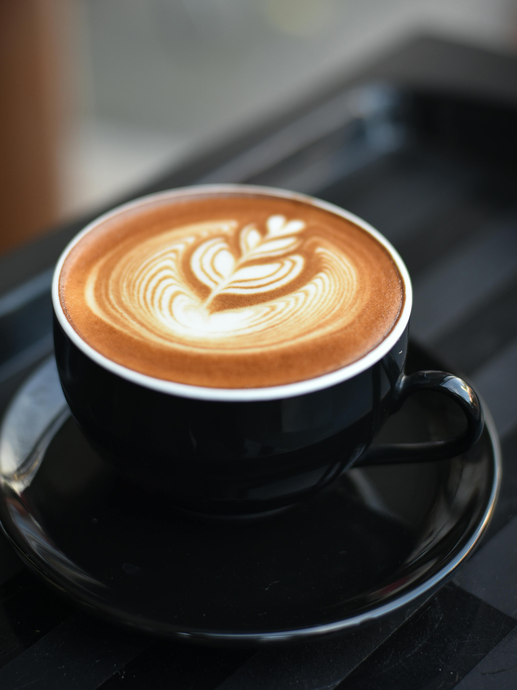
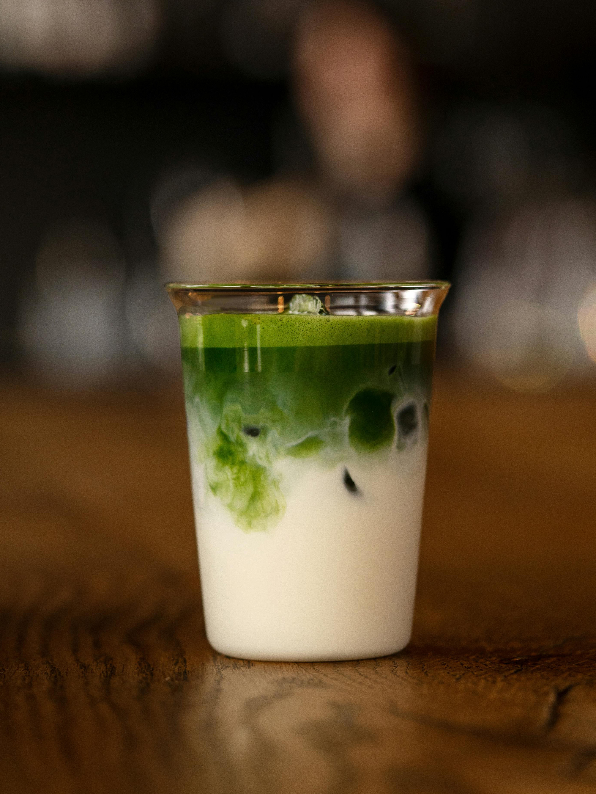
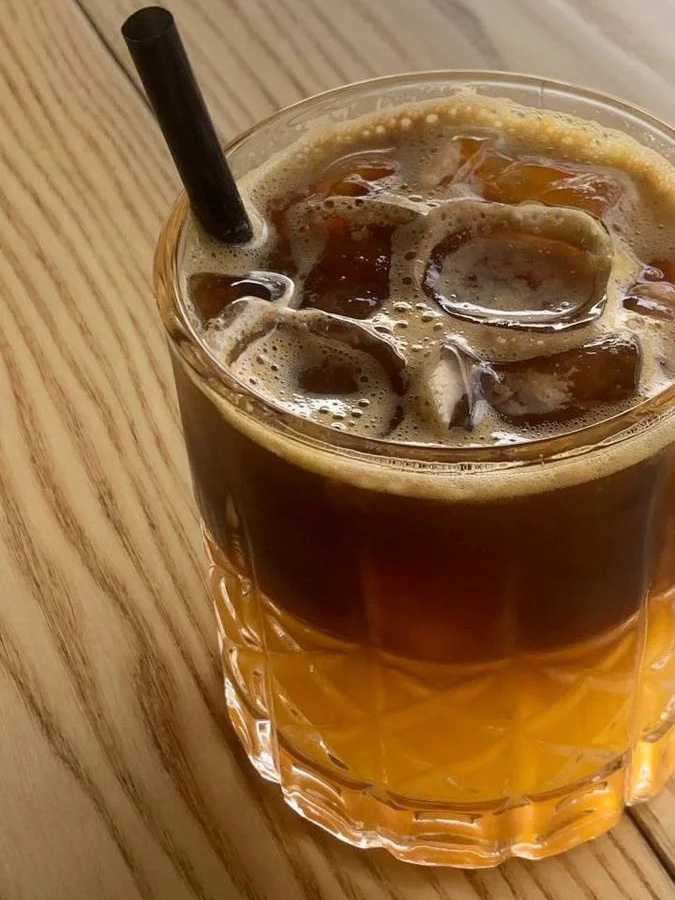

Еспрессо
Класична кава приготовлена лише із додаванням води. Вона досить міцна і дуже бадьорить сонного ранку. П'ють міцний ранковий напій з невеликих чашок, об'ємом 30-45 мл.

Американо
кавовий напій, що містить велику кількість води. Отримав свою назву, оскільки був популярним в Північній Америці. Насправді це еспресо з додаванням окропу (об'єм 120 мл, температура 84—92 °C).

Лате
Лате або кафе лате - це кава з молоком, яка може похвалитися шовковистим шаром піни, що насправді виділяє її серед інших напоїв..

Капучіно
Майстерно приготоване капучино має бути насиченим, але не кислим і мати злегка солодкуватий присмак молока. А оскільки молоко фактично не змішується з кавою, еспресо має міцніший смак.

Матча
Матча — це ніжний та водночас насичений напій із легким трав’янистим ароматом і м’яким вершковим смаком. Правильно приготована матча має оксамитову текстуру, приємну солодкуватість та ледь помітну гірчинку, яка робить смак глибшим і особливим. Завдяки збитому порошку зеленого чаю напій дарує не лише яскравий смак, а й відчуття спокою та гармонії.

Джміль
Кава «Джміль» — це яскраве поєднання міцного еспресо, солодкого апельсинового соку та ніжного карамельного сиропу. Правильно приготований напій має освіжаючий цитрусовий аромат, легку кислинку та насичений кавовий смак, що гармонійно поєднується із солодкими нотками карамелі. Кожен ковток дарує незвичне, але напрочуд збалансоване поєднання свіжості та бадьорості.

Чорний чай
Чорний чай — це класичний гарячий напій, який готують шляхом заварювання чайного листя у гарячій воді. Він має насичений смак, приємний аромат і тонізуючі властивості. Чорний чай зазвичай подають у чашках об'ємом 200–250 мл та вживають як самостійний напій або з цукром, лимоном чи молоком.

Фруктовий чай
Фруктовий чай — це ароматний напій із фруктів та ягід. Він має приємний солодкуватий смак і подається у чашках об'ємом 200–250 мл.